In this codelab, you'll learn how to set up your project in Android Studio for testing, write a Unit Test and run it locally on your development machine and also how to do functional UI testing on the device.
What you’ll learn
- Updating the Gradle build files to include JUnit and the Android Testing Support Library
- Writing Unit Tests which run on the Java VM on your local machine
- Writing Espresso tests which run on the device or emulator
What you’ll need
- Android Studio version 1.2+
- A test device with Android 4.0+
How will you use this tutorial?
How would you rate your experience with building Android apps?
Are you currently testing your apps with Unit Tests or functional UI tests?
If you’re launching Android Studio for the first time, select “Start a new Android Studio project” from the Welcome screen. If there’s already a project open, go to File > New > New Project…
The “Create new project” wizard will guide you through the process. On the first screen enter the following:
Setting |
Value |
Application name |
|
Company domain |
|
This will ensure your code has consistent naming with the content presented throughout the codelab. You can leave all the other selections on their default setting and simply press Next until your project is created.
You can press the Run button to check if the app runs correctly. You should either select and launch an Emulator from the list or make sure your device is properly attached via USB with debugging enabled.
Run button to check if the app runs correctly. You should either select and launch an Emulator from the list or make sure your device is properly attached via USB with debugging enabled.
The app doesn’t do much right now, but you should see a screen showing “Hello world!” and the name of your app.
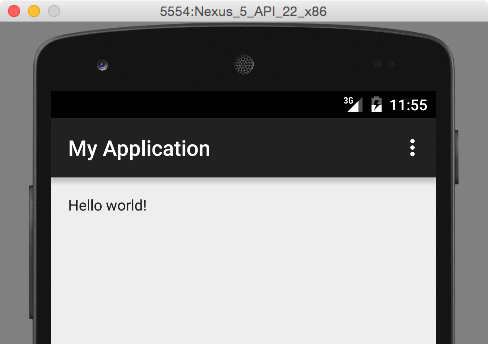
Frequently Asked Questions
Before you start writing tests, let’s go through a short checklist to make sure that your project is configured correctly.
First, make sure you select “Unit Tests” under Test Artifact in the Build Variants pane.
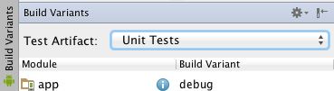
Next, create the folders test and test/java under your module’s src folder. Note that you cannot do this using the default 
Android perspective. You can either use your system’s file explorer to create the necessary folders or switch to the Project perspective by using the drop down on the top-left of the Project pane. Your final project hierarchy should look like this:
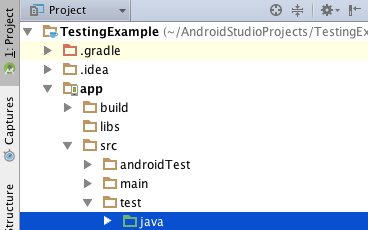
(you can go back to the Android project perspective for the remainder of this codelab)
And lastly, open your module’s build.gradle (Module:app) file and add JUnit4 to your dependencies section, then click on the  Gradle sync button.
Gradle sync button.
build.gradle
Now that everything is set up, it’s time to start writing your first test. But in order to do that, you will need some code that will be tested. For that purpose, let’s create a very simple Calculator class. This will be what is called our “class under test”.
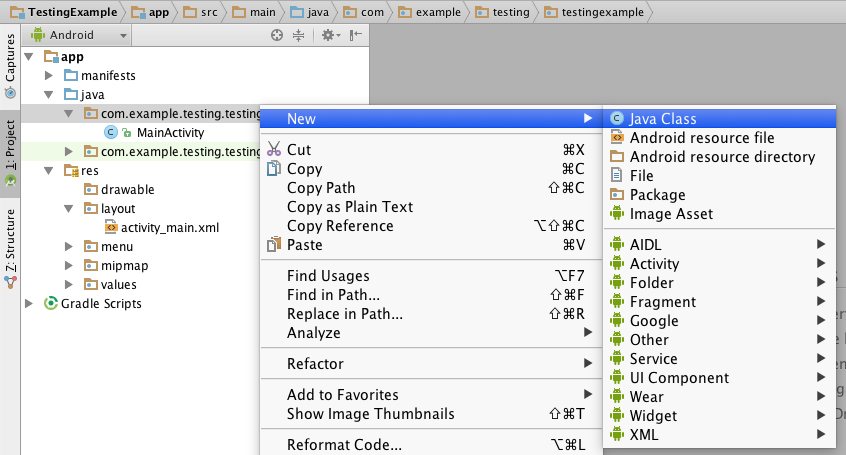
We’ll add methods for the most common arithmetic operations, like addition and subtraction. Copy and paste the following code into your editor. Don’t worry about the actual implementations yet, just let all methods return 0 (zero) for now.
Calculator.java
Android Studio provides a quick way to create the actual test class for you. Just right click on the Calculator class declaration in your editor and select Go to > Test, then “Create a new test…”
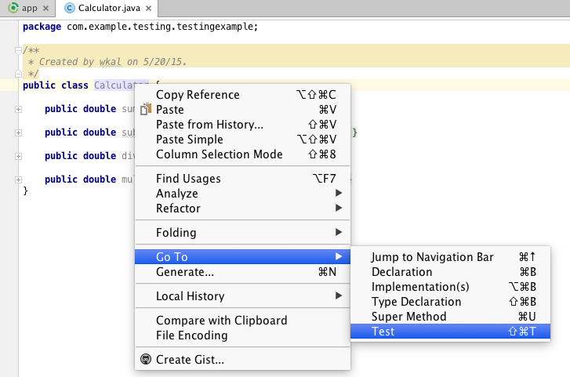
In the dialog window that opens, choose JUnit 4 and select the “setUp/@Before” option, as well as generate test methods for all of our calculator operations.
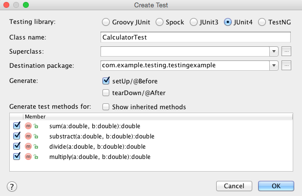
This should generate a test class skeleton in the correct folder (app/src/test/java/com/example/testing/testingexample) with the test methods ready to fill in. Here is an example of how you might test the calculator operations:
CalculatorTest.java
Feel free to copy the code to your editor or write your own tests using assertions provided by the JUnit framework.
It’s finally time to run your test! Right click on the CalculatorTest class and select Run > CalculatorTest. You can also run the test from the command line, by issuing the following command in your project’s directory:
./gradlew test
Regardless of how you run your tests, you should see the output, telling you that 4 out of 4 tests have failed. This is the expected result, as we haven’t implemented the arithmetic operations yet.
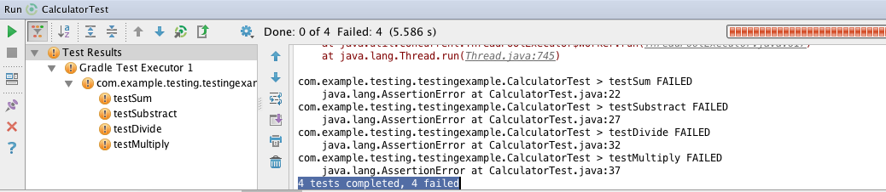
Let’s modify the sum(double a, double b) method in the Calculator class to return a correct result and re-run the tests. You should see that only 3 out of 4 tests have failed.
Calculator.java
As an exercise, you can implement the remaining methods to make all tests pass.
Although there is support for running instrumentation tests in the Android framework, current development efforts are focused around the new AndroidJUnitRunner which is released as part of the Android Testing Support Library. The library also contains Espresso, a framework for running functional UI tests. Let’s add both to our project by editing the relevant sections in the module’s build.gradle file:
build.gradle
All that’s left is to switch to Android Instrumentation Tests in the Build Variants pane. Your project should sync automatically at this point. If it does not, press theGradle sync button.
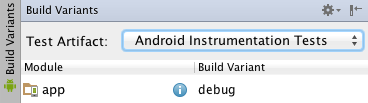
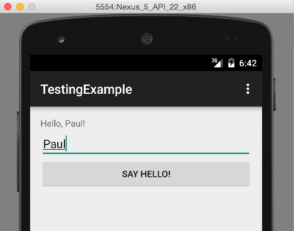
Before we begin testing the UI with Espresso tests, let’s add some Views and a simple behavior to the app. We’ll use an EditText where the user can enter his name and a Button that greets the user using the TextView for output. Open res/layout/activity_main.xml and paste the following code:
activity_main.xml
You’ll also need to add the onClick handler in MainActivity.java:
MainActivity.java
You can now run the app to see it in action and make sure everything works properly. Before you press the Run button, make sure your Run Configuration is not set to run tests from the previous part of the codelab. Use the dropdown and select app. It should look like this:
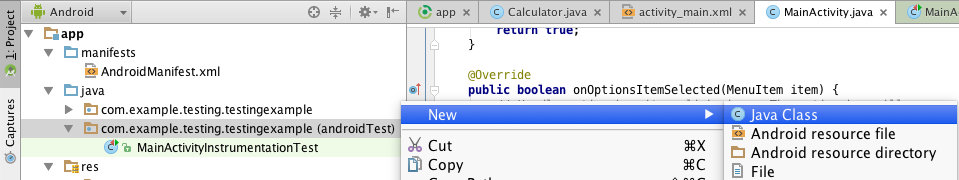
In the project overview, find your package name ending with the (androidTest) suffix and create a new Java class there. You can name it MainActivityInstrumentationTest. Paste the following code as its contents:
MainActivityInstrumentationTest.java
The class will be run by the AndroidJUnitRunner and execute the test implemented in the sayHello() method. Here’s what the test does, line by line:
- First, it finds the view with the ID
editTextand types in the string“Peter”, then closes the on-screen keyboard. - Next, the test performs a click on the View with text “
Say hello!”. That’s our Button, for which we didn’t set an id in the layout XML, hence we refer to it by searching for its text. - Finally, the text contents of the TextView are compared with the expected result and the test passes if they match.
You can run the test by right clicking on the class and selecting Run > MainActivityInstrume… (the second one with the Android icon)
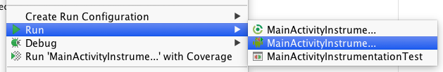
This will run your test on the emulator or connected device and, if you watch the screen, you can see the actions (like typing into the EditText) being performed by the runner. See the output in Android Studio for a report on passed and failed tests.
We hope you enjoyed the code lab and are excited to start testing your apps. What next?
- Learn more about local unit tests vs instrumented unit tests.
- Read about setting up the Android Testing Support Library
- Watch these great devbyte videos about Android Studio:
Introduction to Android Studio
Introducing Gradle (Ep 2, Android Studio)
Layout Editor (Ep 3, Android Studio)
Debugging and testing in Android Studio (Ep 4, Android Studio)
- Check out our testing samples repository on Github